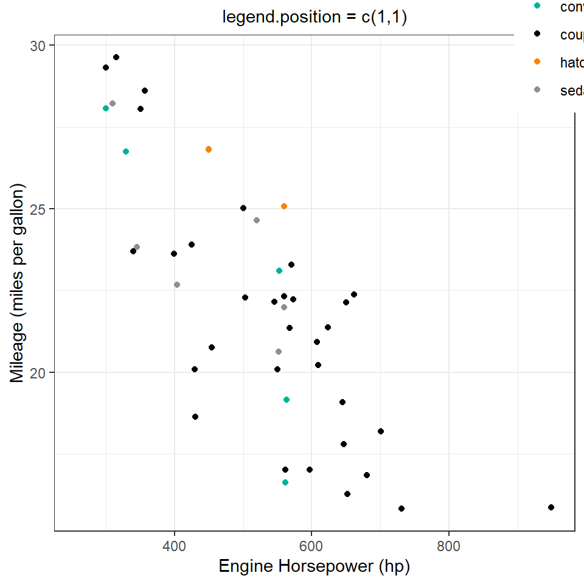
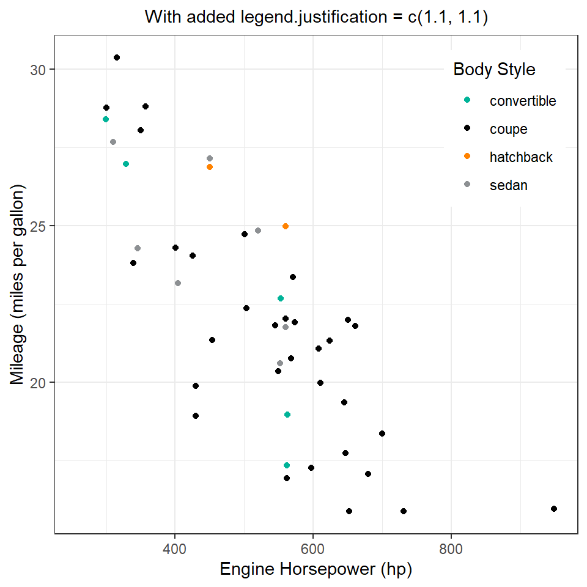
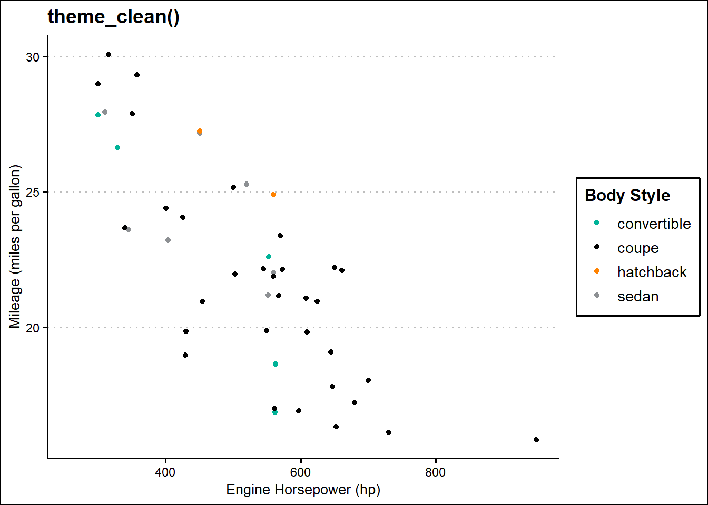
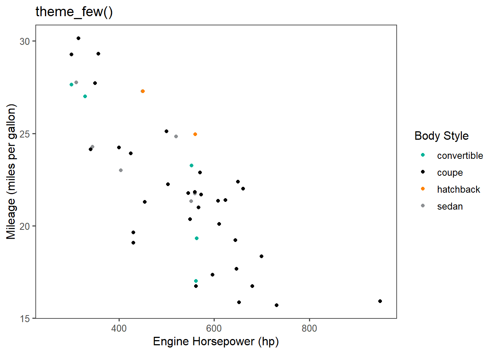

Code
library(tidyverse)
library(scales)
library(ggthemes)
library(gt)Themes
library(tidyverse)
library(scales)
library(ggthemes)
library(gt)A demonstration on the use of legend.position = "" and legend.justification = "" with the function theme() function of the ggplot2 is shown in Figure 1 . As we can see in Figure 1 (d), using both arguments together produces the best result.
g1 <- gt::gtcars |>
ggplot(aes(hp, mpg_h, colour = bdy_style)) +
geom_jitter() +
labs(
x = "Engine Horsepower (hp)",
y = "Mileage (miles per gallon)",
colour = "Body Style"
) +
paletteer::scale_colour_paletteer_d("nbapalettes::clippers_original") +
theme_bw() +
theme(plot.subtitle = element_text(hjust = 0.5))
g1 + labs(subtitle = "Base Plot")
g1 + theme(legend.position = "bottom") + labs(subtitle = "legend.position = 'bottom'")
g1 +
theme(legend.position = c(1,1)) +
labs(subtitle = "legend.position = c(1,1)")
g1 +
theme(legend.position = c(1,1),
legend.justification = c(1.1, 1.1)) +
labs(subtitle = "With added legend.justification = c(1.1, 1.1)")


A very good argument to use with theme_*() family of functions is the base_size = argument to fix a base size for all text used in the plot, and base_family = to set the font for the entire plot.
ggthemes. Which do you like the best?The various themes of ggthemes are shown in ?@fig-q1. The best one seems to be theme_clean() as it allows easy customization.
g2 <- g1 + theme(legend.position = "bottom")
g2 + ggthemes::theme_calc() + ggtitle("theme_calc()")
g2 + ggthemes::theme_clean() + ggtitle("theme_clean()")
g2 + ggthemes::theme_economist() + ggtitle("theme_economist()")
g2 + ggthemes::theme_excel_new() + ggtitle("theme_excel_new()")
g2 + ggthemes::theme_few() + ggtitle("theme_few()")
g2 + ggthemes::theme_gdocs() + ggtitle("theme_gdocs()")
g2 + ggthemes::theme_wsj() + ggtitle("theme_wsj()")
g2 + ggthemes::theme_solarized_2() + ggtitle("theme_soloarized_2()")





What aspects of the default theme do you like? What don’t you like?
What would you change?
In ggplot2, the default theme (theme_gray()) has several aspects that align well with Tufte’s principles and are conducive to clear and effective data visualization:
Minimalist Design: The default theme employs a clean and minimalist design, which is in line with Tufte’s principle of maximizing data-ink ratio. This means that unnecessary elements are minimized, allowing the data to stand out more prominently.
Neutral Background: The light gray background in the default theme provides a neutral canvas for the data to be presented on. This is generally preferable for readability, especially when using a white background, as it reduces contrast and minimizes visual distractions.
Simple Grid Lines: The faint grid lines in the default theme help guide the viewer’s eye across the plot without overpowering the data.
However, there are a few aspects of the default theme that could be improved to better align with Tufte’s principles, which I generally follow,: —
Thinner Axes and Tick Marks: Tufte suggests using thinner axes and tick marks to further reduce visual clutter and draw attention to the data. The default theme could benefit from thinner lines for both axes and tick marks.
Increased Font Size for Labels and Titles: While the default font size is generally adequate, increasing the font size slightly for axis labels, titles, and annotations can enhance readability, especially when viewing plots from a distance or on smaller screens.
Adjustment of Plot Margins: Tufte emphasizes the importance of maximizing the data-ink ratio by minimizing non-data ink, including unnecessary margins. Adjusting the default plot margins to be more compact could help achieve this goal and allow for more space dedicated to the presentation of data.
Overall, while the default theme in ggplot2 aligns well with Tufte’s principles in many aspects, there are opportunities for further refinement to enhance clarity, simplicity, and effectiveness in data visualization. These suggested changes aim to optimize the balance between aesthetic appeal and functional clarity in accordance with Tufte’s principles.
Look at the plots in your favourite scientific journal. What theme do they most resemble? What are the main differences?
In many scientific journals, especially those focused on data visualization and analysis, the plots often resemble themes that prioritize clarity, simplicity, and effective communication of information. One common theme that many plots in scientific journals resemble is the “classic” theme in ggplot2, which emphasizes clean lines, minimal distractions, and a focus on the data itself.
The example image for a graph / plot from the journal Nature is given below:

The main differences between the plots in scientific journals and the “classic” ggplot2 theme lie in the specific customizations and adjustments made to suit the needs of the particular journal’s style and the preferences of its audience. Here are some of the main differences that may be observed:
Color Palette: Scientific journals often have specific guidelines for color usage, particularly for distinguishing between different groups or conditions in the data. While the “classic” ggplot2 theme uses a simple default color palette, plots in scientific journals may employ custom color schemes that adhere to the journal’s style guidelines.
Font Choices: Journals typically have standardized fonts for text, including axis labels, titles, and annotations. While ggplot2 allows for customization of fonts, plots in scientific journals may use fonts that match the journal’s style guide, which may differ from the default fonts in ggplot2.
Axis and Tick Mark Styles: The style and thickness of axes and tick marks may be adjusted in scientific journal plots to match the journal’s aesthetic preferences or to enhance readability. This could include changes such as thinner lines, different line styles, or adjustments to the length and spacing of tick marks.
Annotation and Labeling: Scientific journal plots often include detailed annotations, such as significance indicators, error bars, or additional text descriptions. These annotations may be placed strategically to ensure clarity and precision in conveying the results of the analysis.
Plot Aspect Ratio and Size: The aspect ratio and overall size of plots in scientific journals may be adjusted to fit within the journal’s page layout and to optimize presentation on both digital and print platforms. This could involve resizing plots to ensure they are legible and visually appealing at different scales.
Overall, while plots in scientific journals share similarities with the “classic” ggplot2 theme in their emphasis on clarity and simplicity, they often incorporate customizations to align with the journal’s style guidelines and the preferences of its audience. These customizations aim to enhance the effectiveness of the visual communication of data within the context of the specific publication.